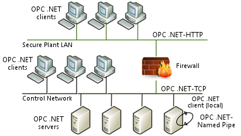

OPC .NET overview
OPC .NET 3.0 (WCF) is a Microsoft .NET-based interface designed for secure and reliable access to real-time and historical process automation system data. OPC .NET provides a standard, .NET-based interface for OPC Classic server functionality, OPC Data Access (DA), OPC Alarms & Events (A&E) and OPC Historical Data Access (HDA). OPC .NET is the newest technology added to the OPC Foundation technology portfolio complementing OPC Unified Architecture (UA) and COM-based OPC Classic technologies.
OPC .NET provides the same functionality as the OPC Classic servers but is based on .NET communications instead of COM to improve configuration for remote server access and communication through firewalls.

In addition to OPC Classic functionality, OPC .NET provides the following features:
Secure communications - OPC .NET delivers a firewall-friendly interface and patented security features to provide secure communications between process automation systems and higher level manufacturing execution systems (MES) and enterprise resources planning (ERP) systems.
Robust connectivity - OPC .NET increases client connectivity robustness by maintaining the state of the client connection, allowing the client to reconnect quickly and easily if communications with the server were lost.
Plug and play - OPC .NET provides automatic server discovery allowing OPC .NET clients to automatically discover and connect to OPC .NET servers.
One interface for real-time, historical and event data transfer - OPC .NET provides a single interface to read and write real-time process data, subscribe to real-time alarms and events and read and write historical data.
Based on open, industry standards - OPC .NET is based on Windows Communication Foundation (WCF), the latest communications technology available from Microsoft. Using WCF, an OPC .NET server is able to offer industry standard communication protocols, such as the Transmission Control Protocol (TCP), the Hypertext Transfer Protocol (HTTP) and Secure Hypertext Transfer Protocol (HTTPS).
Easy to implement - OPC .NET provides .NET client applications with a simple .NET interface for easy access to OPC Classic servers. OPC .NET client applications can take advantage of new user interface technologies available in Windows Presentation Foundation (WPF).
Access data from anywhere - OPC .NET delivers a secure and robust .NET interface that supports interprocess and TCP communications for .NET-based OPC .NET clients and a Web service interface for Internet based or non-Microsoft based OPC .NET clients.
Future proof - As new WCF interface technologies become available, OPC .NET can use these new interfaces to provide additional connectivity options. In addition, because OPC .NET has been designed as a native .NET interface, additional protocols, such as OPC UA can be easily layered on top of OPC .NET to extend the OPC .NET functionality and increase the types of clients that can connect.
Easy migration from OPC Classic. - OPC .NET products can wrap OPC Classic clients and servers to provide a quick and easy migration path from OPC to OPC .NET. OPC .NET is also network compatible with OPC Classic servers and thus may be used in the same system as OPC Classic clients and servers.